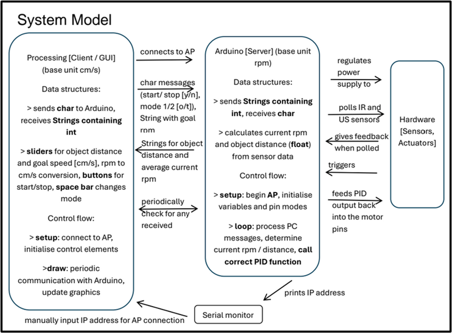

As part of a four-person team, I developed an Arduino-based autonomous buggy through the Bronze, Silver and Gold challenges. The project combined line following, PID speed control, object following and camera-based sign recognition. Our buggy completed the Gold track in 1 minute 44 seconds, and we also demonstrated a phone-controlled steering mode.
The buggy brings together infrared line sensors, wheel encoders, an ultrasonic distance sensor and a HuskyLens camera around an Arduino controller. An H-bridge drives the two DC motors, while a Processing interface communicates with the buggy through its Wi-Fi access point.
We kept the electronics compact by selecting pins to reduce wire crossings and keep connections short. Testing highlighted the practical limits of the system: unequal motor output caused drift, battery discharge changed turning performance, and camera alignment affected tag detection. Motor compensation, secure connections and pre-run checks helped improve reliability.

Software system model
01 / 01
02 / Software
Control and navigation
For the Silver challenge, we implemented two PID control modes: maintaining a user-selected speed and following an object at a distance of 15 cm. Wheel encoders provide speed feedback, while the ultrasonic sensor measures the distance to the object. An experimentally calibrated RPM-to-PWM conversion gives the controller an initial motor command and smooths changes in target speed.
The Processing interface displays the current mode, target speed, measured speed and object distance. Messages use identifiers to distinguish commands and sensor readings. The Arduino runs the control loop in RPM, while the interface converts speed to cm/s for display.
For Gold, the HuskyLens recognises AprilTags for left, right, fast and slow. The software checks recent observations and tag size before activating a command, then changes the line-following logic to negotiate junctions. An Android app built with MIT App Inventor adds remote steering by sending phone orientation over UDP while preserving the connection to Processing.